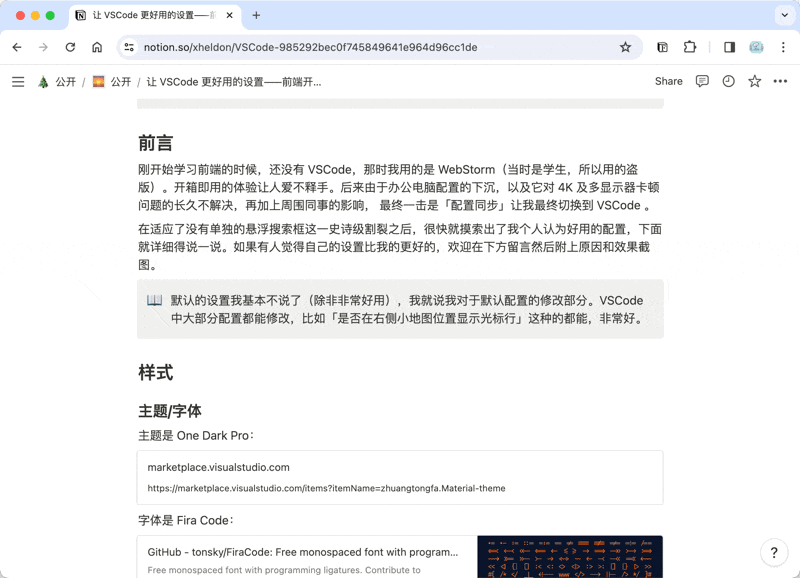

前言
Notion Flow 是什么？
Notion Flow 是一个浏览器插件，适用于基于 Chromium 项目的浏览器，如 Chrome 和 Edge 等。
Notion Flow 解决了什么问题？
Notion Flow 插件的构建目标是为了 简化基于 Github 的博客写作过程。
通常而言，如果你的博客系统是基于 Github 的，比如 Jekyll、Vitepress、Hexo 等，每当你想要写一篇博客，你需要以下流程：
- 在桌面端打开一个文本编辑器如 VSCode。
- 打开这个博客项目目录。
- 在对应的博客目录（如 Jekyll 的就是
_post目录），新建一个 Markdown 文件进行写作。 - 写作完毕后，再使用 Git 命令或相关客户端 Push 到 Github 仓库中。
这样，你的博客就会更新了。在这个过程中，你需要手动处理链接、Front Matter、图片引用、Markdown 格式，等等，这些都是很繁琐的事情。
而 Notion 是一款伟大的产品，它解决了文章创作过程的困难。它使用 Electron 构建，无论桌面端（Win、Mac、Linux）还是移动端（Android、iOS）均可使用，可以让你随时随地进行创作。
因此，我将这两个过程结合起来，构建了 Notion Flow 浏览器插件。
Notion Flow，顾名思义，是一个围绕 Notion 来构建的产品，它可以将你的 Notion 内容「流动」到你的 Github 仓库。插件的一些基础功能会帮助你更好的提升你 Notion 的写作效率，如显示页面分级标题、跳转到页面顶部。而它的发布功能，在经过一些简单的、一次性的配置后，可以让你一键将你的 Notion 内容以 Markdown 格式同步到你的 Github 仓库指定目录，而无需手动处理其中的图片引用、Markdown 格式等，这些 Notion Flow 在背后都帮你像魔法般处理好了！甚至更进一步的，对于进阶用户，它还支持转换 Notion 的非标准 Markdown 模块，如 Bookmark、Callout 为你的自定义格式，只需要自己编写转换函数即可！
注意
你无法直接在博客中引用 Notion 中上传的图片地址（Notion 不允许该行为，上传到 Notion 的图片有过期时间），这也意味着你无法将 Notion 作为图床使用。因此本插件会先将 Notion 中的图片上传到 OSS 服务中，需要你 提供 OSS 地址 和设置 图片上传路径。将文件发送到 Github 需要提供 Github Personal Token 和设置 上传文件路径，支持通配符，仅需设置一次！
除此之外，Notion Flow 还支持更加定制化的处理你的 Notion 内容，如开发中的 AI 功能，它使用 OpenAI API 来作为昂贵的 Notion AI 的替代；以及更高级的插件功能，让你能够参与到 Notion 内容的「流动」过程，等。
如何安装？
提示
本插件在 Chrome 114 及更高版本可用；Edge 因为支持 SidePanel 接口的最低版本不明确，因此无法确定最低支持版本，建议将浏览器都升级到最新版本。
目前仅上架了 Chrome 和 Edge 的插件商店，你可以在这里找到它们：
如何使用？
启用
提示
本插件被设计为仅可在 Notion 页面中使用（*.notion.site 和 www.notion.so），在其它页面中该插件会被禁用。
在 Notion 页面中，点击插件 icon，即可启用插件，在侧边栏可以看到该插件的用户界面。

设置
新安装插件后，会自动打开插件设置页面（后续你也可以通过在浏览器右上角的插件 icon 上，点击右键选择「选项」来打开该页面）。插件的设置都在这里进行。
支持我的开发工作！
如果你觉得 Notion Flow 对你有帮助，欢迎你支持我的开发工作，金额随意，感激不尽！
Paypal: 向我转钱
Wechat:
Alipay: